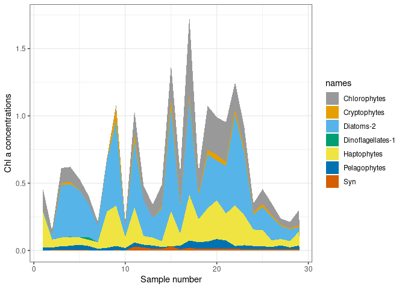

The phytoclass package uses non-negative matrix factorization and simulated annealing to determine the chl a concentrations of different phytoplankton groups from pigment concentrations.
The main function is ‘Simulated annealing’. This can be used in conjuction with the cluster function, which clusters larger datasets. To understand how to use your own matrices instead of the default dataset, please see the example in the vignette.
Why Phytoclass?
- phytoclass is entirely open-source, whereas other methods rely on external software
- ability to run phytoclass from R allows scripting for improved reproducibility
- scripting also enables batch processing for running many samples
- phytoclass features improved gradient-descent algorithms for solving the least-squares problem
Additional Features
When setting up your matrices, it is important to ensure that pigments are in the same order in the Sm and Fm matrices. Chlorophyll a must be the final column.
There is a separate function when Divinyl chlorophyll a and Prochlorococcus are used. Here Divynl chlorophyll a must be the 2nd to last column (see ‘Fp’).
The ’Steepest Descent’function is similar to that of CHEMTAX, and is unconstrained by minimum and maximum values, unlike the simualted annealing function. I would use this with more caution.
Installation
It can be installed from CRAN with:
install.packages("phytoclass")Or the development version from GitHub with:
# install.packages("devtools")
devtools::install_github("AndyMcKenzieFromNZ/phytoclass")Example
For the built-in samples matrix Sm of pigment samples:
library(phytoclass)
set.seed("84545")
Results <- simulated_annealing(Sm, niter = 5)
#>
#> Condition number = 222
#> Current error: 0.0334
#> Neighbour's error: 0.0334
#> Temperature (%): 99.1
#>
#> Current error: 0.0292
#> Neighbour's error: 0.0292
#> Temperature (%): 98.21
#>
#> Current error: 0.0289
#> Neighbour's error: 0.0289
#> Temperature (%): 97.32
#>
#> Current error: 0.0289
#> Neighbour's error: 0.0291
#> Temperature (%): 96.45
#>
#> Current error: 0.0289
#> Neighbour's error: 0.0295
#> Temperature (%): 95.58
#>
Results$RMSE
#> [1] 0.02887119
Results$MAE
#> Per X19but Fuco Neox Viol X19hex
#> 6.762107e-05 2.117964e-05 4.868073e-03 9.245641e-03 4.011338e-03 3.175673e-04
#> Allo Zea Chl_b Tchla
#> 1.271716e-04 5.946094e-05 3.004235e-03 6.487357e-02
Results$Error
#> Per X19but Fuco Neox Viol
#> [1,] -3.253203e-04 5.363457e-05 -0.012327735 0.004113861 0.0016646554
#> [2,] -5.150124e-04 8.490852e-05 -0.019515955 0.003010191 0.0014654390
#> [3,] -4.308139e-04 7.102697e-05 -0.016325323 0.005076986 -0.0044188896
#> [4,] -3.763864e-04 6.205367e-05 -0.014262838 0.005379809 -0.0046022039
#> [5,] -8.763904e-05 1.444878e-05 -0.003321006 0.008703848 -0.0043486318
#> [6,] -3.571294e-05 5.887883e-06 -0.001353311 0.008530798 -0.0043429984
#> [7,] 0.000000e+00 -3.251896e-05 0.007474381 0.007151298 0.0007978740
#> [8,] 0.000000e+00 -2.319004e-05 0.005330158 0.002588776 -0.0004659437
#> [9,] 0.000000e+00 -5.749674e-06 0.001321544 0.002274345 0.0015089554
#> [10,] 0.000000e+00 -3.081395e-05 0.007082488 0.007245941 0.0015906999
#> [11,] 0.000000e+00 -1.341877e-05 0.003084262 0.006617658 -0.0053975686
#> [12,] 0.000000e+00 -1.506524e-05 0.003462698 0.015971833 -0.0069289827
#> [13,] 0.000000e+00 -1.333348e-05 0.003064657 0.014568176 -0.0090934337
#> [14,] 0.000000e+00 -2.479751e-05 0.005699628 0.016813884 0.0011476034
#> [15,] -1.006561e-04 1.659487e-05 -0.003814278 0.013939555 0.0089862189
#> [16,] 0.000000e+00 -1.042338e-05 0.002395780 0.016908409 0.0116951587
#> [17,] -4.521531e-05 7.454510e-06 -0.001713396 0.009954774 0.0103869980
#> [18,] 0.000000e+00 -1.805572e-05 0.004150050 0.010623890 0.0015261320
#> [19,] 0.000000e+00 -7.308043e-06 0.001679731 0.009895152 0.0030226855
#> [20,] 0.000000e+00 -7.329856e-06 0.001684744 0.005672210 0.0024367842
#> [21,] 0.000000e+00 -8.577450e-06 0.001971500 0.008121745 0.0028953335
#> [22,] -6.645487e-06 1.095621e-06 -0.000251825 0.003468847 0.0009586975
#> [23,] -3.760915e-05 6.200505e-06 -0.001425166 0.006553443 0.0010144299
#> [24,] 0.000000e+00 -2.107489e-05 0.004843997 0.016800268 0.0067781747
#> [25,] 0.000000e+00 -8.859498e-06 0.002036328 0.008479515 0.0030955093
#> [26,] 0.000000e+00 -8.626625e-06 0.001982802 0.010122495 0.0022323503
#> [27,] 0.000000e+00 -1.364556e-05 0.003136388 0.012557039 0.0036196604
#> [28,] 0.000000e+00 -1.515004e-05 0.003482189 0.011933333 0.0081960749
#> [29,] 0.000000e+00 -1.296497e-05 0.002979957 0.015045507 -0.0017107194
#> X19hex Allo Zea Chl_b Tchla
#> [1,] -8.041962e-04 -3.376568e-04 -1.505768e-04 -3.484168e-03 0.164283515
#> [2,] -1.273118e-03 -5.345421e-04 -2.383771e-04 -4.149725e-03 0.260076134
#> [3,] -1.064978e-03 -4.471507e-04 -1.994052e-04 -1.010734e-03 0.217556704
#> [4,] -9.304321e-04 -3.906592e-04 -1.742130e-04 -6.888635e-04 0.190071345
#> [5,] -2.166449e-04 -9.096239e-05 -4.056434e-05 1.669699e-06 0.044256839
#> [6,] -8.828286e-05 -3.706720e-05 -1.652998e-05 3.107503e-04 0.018034677
#> [7,] 4.875891e-04 2.047233e-04 9.129562e-05 -8.967796e-04 -0.099606096
#> [8,] 3.477113e-04 1.459931e-04 6.510506e-05 4.442483e-04 -0.071031463
#> [9,] 8.621056e-05 3.619711e-05 1.614197e-05 -1.100851e-03 -0.017611341
#> [10,] 4.620240e-04 1.939894e-04 8.650885e-05 -1.393601e-03 -0.094383599
#> [11,] 2.012009e-04 8.447795e-05 3.767263e-05 1.899010e-03 -0.041101900
#> [12,] 2.258881e-04 0.000000e+00 4.229503e-05 7.811498e-04 -0.046145070
#> [13,] 1.999220e-04 0.000000e+00 3.743317e-05 2.175209e-03 -0.040840647
#> [14,] 3.718136e-04 1.561129e-04 6.961795e-05 -3.382436e-03 -0.075955153
#> [15,] -2.488233e-04 -1.044731e-04 -4.658939e-05 -8.274774e-03 0.050830340
#> [16,] 1.562880e-04 6.562043e-05 2.926319e-05 -9.477557e-03 -0.031926963
#> [17,] -1.117729e-04 -4.692992e-05 -2.092822e-05 -7.880297e-03 0.022833282
#> [18,] 2.707273e-04 1.136699e-04 5.069067e-05 -2.486666e-03 -0.055304947
#> [19,] 1.095767e-04 4.600783e-05 2.051702e-05 -3.474013e-03 -0.022384651
#> [20,] 1.099038e-04 4.614515e-05 2.057826e-05 -2.265071e-03 -0.022451463
#> [21,] 1.286102e-04 5.399939e-05 2.408083e-05 -2.988952e-03 -0.026272862
#> [22,] -1.642773e-05 -6.897489e-06 -3.075910e-06 -1.281776e-03 0.003355904
#> [23,] -9.297032e-05 -3.903532e-05 -1.740766e-05 -2.130429e-03 0.018992245
#> [24,] 3.159967e-04 1.326771e-04 5.916686e-05 -6.495509e-03 -0.064552718
#> [25,] 1.328392e-04 5.577503e-05 2.487267e-05 -3.162350e-03 -0.027136782
#> [26,] 1.293475e-04 5.430897e-05 2.421889e-05 -3.059299e-03 -0.026423488
#> [27,] 2.046014e-04 8.590570e-05 3.830933e-05 -4.152928e-03 -0.041796559
#> [28,] 2.271596e-04 9.537719e-05 4.253311e-05 -6.407416e-03 -0.046404819
#> [29,] 1.943966e-04 8.162104e-05 3.639860e-05 -1.866587e-03 -0.039711899
Results$`F matrix`
#> Per X19but Fuco Neox Viol X19hex Allo Zea
#> Chlorophytes 0.0000 0.0000 0.0000 0.0223 0.0559 0.0000 0.0000 0.008800
#> Cryptophytes 0.0000 0.0000 0.0000 0.0000 0.0000 0.0000 0.5406 0.000000
#> Diatoms-2 0.0000 0.0000 0.7893 0.0000 0.0000 0.0000 0.0000 0.000000
#> Dinoflagellates-1 0.5611 0.0000 0.0000 0.0000 0.0000 0.0000 0.0000 0.000000
#> Haptophytes 0.0000 0.1078 0.2585 0.0000 0.0000 0.4263 0.0000 0.000000
#> Pelagophytes 0.0000 0.5890 0.9259 0.0000 0.0000 0.0000 0.0000 0.000000
#> Syn 0.0000 0.0000 0.0000 0.0000 0.0000 0.0000 0.0000 1.212254
#> Chl_b Tchla
#> Chlorophytes 0.7834 1
#> Cryptophytes 0.0000 1
#> Diatoms-2 0.0000 1
#> Dinoflagellates-1 0.0000 1
#> Haptophytes 0.0000 1
#> Pelagophytes 0.0000 1
#> Syn 0.0000 1
Results$`Class abudances`
#> NULL
Results$Figure